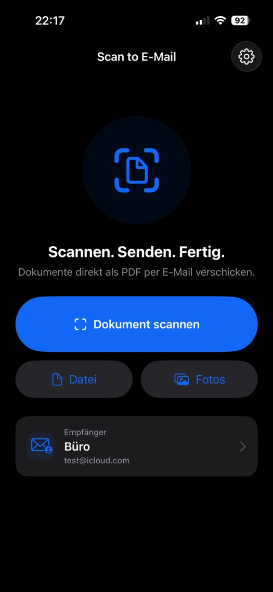

Scannen oder importieren
Dokumente direkt mit dem iPhone scannen oder vorhandene PDF-Dateien, Fotos und Bilder verwenden.
DOKUMENTE DIREKT WEITERSENDEN
Dokumente scannen oder vorhandene Dateien und Bilder importieren, als PDF aufbereiten und mit wenigen Schritten für den E-Mail-Versand bereitstellen.

SCHNELL VOM DOKUMENT ZUR E-MAIL
Dokumente direkt mit dem iPhone scannen oder vorhandene PDF-Dateien, Fotos und Bilder verwenden.
Bilder als PDF aufbereiten und den Dateinamen vor dem Versand anpassen.
Häufig verwendete E-Mail-Empfänger hinterlegen und Dokumente über die E-Mail-Funktionen des Geräts versenden.
DEINE DOKUMENTE. DEINE DATEN.
Dokumente werden lokal auf dem Gerät verarbeitet. ScanToEmail verwendet keine eigenen Analyse- oder Trackingdienste und keine Werbung. Der tatsächliche E-Mail-Versand erfolgt über den von dir verwendeten E-Mail-Dienst.
Datenschutz der App lesenGUT ZU WISSEN
Ja. Vorhandene PDF-Dateien sowie Fotos und Bilder können importiert und für den Versand aufbereitet werden.
Ja. Der Dateiname kann vor dem Versand angepasst werden.
Nein. ScanToEmail verarbeitet die Dokumente lokal auf dem Gerät und überträgt sie nicht an Server des Entwicklers.
Auf der Supportseite findest du die Kontaktmöglichkeiten und Hinweise für technische Anfragen.